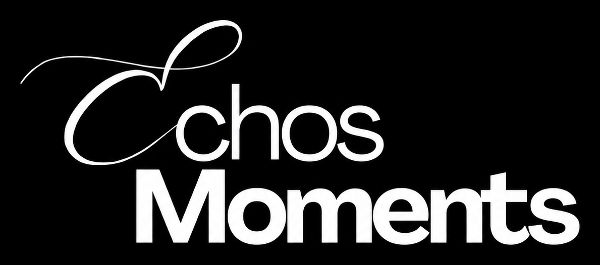
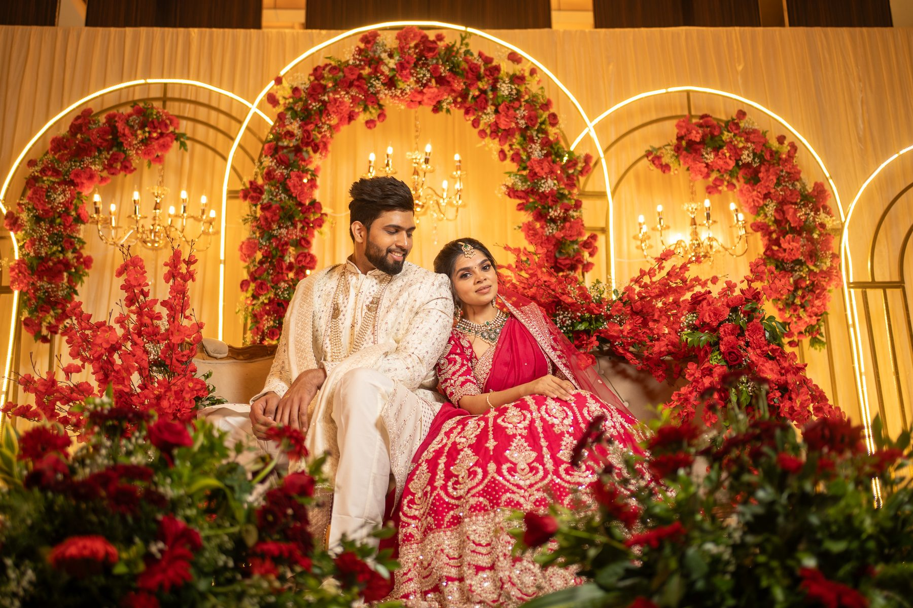
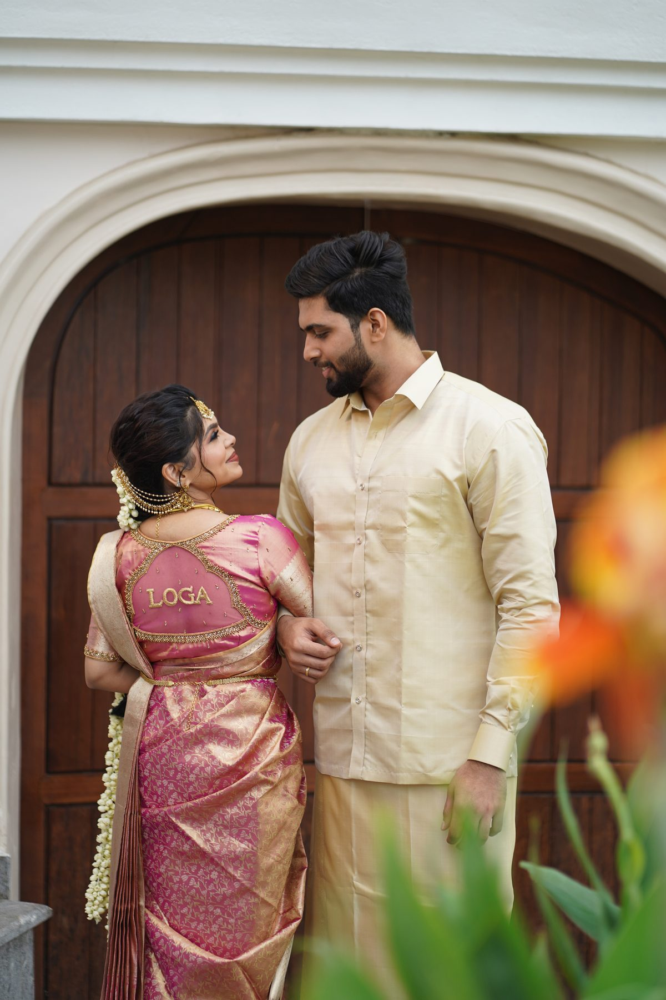
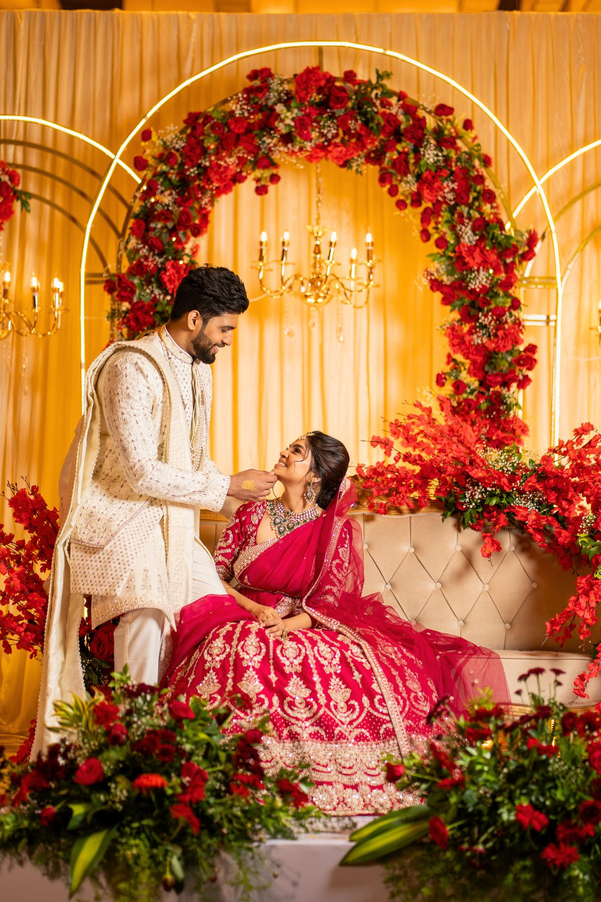
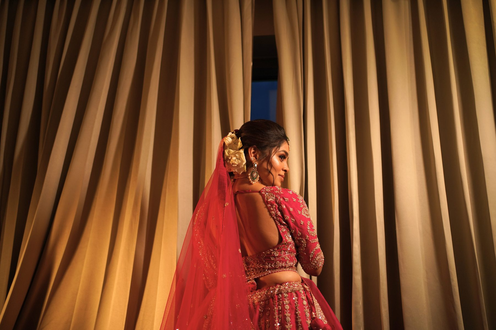

Planned Visual Mood
Each portfolio frame is shaped through location, composition, timing, color, and the emotional purpose behind the shot.

Book CallPortfolio
The portfolio presents Echos Moments's visual language: clean composition, carefully handled color, emotional framing, and production choices that make the subject feel intentional. Images are kept in a consistent responsive grid so every frame sits cleanly on desktop and mobile.




Each portfolio frame is shaped through location, composition, timing, color, and the emotional purpose behind the shot.
The team focuses on light, lens choice, subject comfort, and shoot flow so the final visuals feel polished rather than accidental.
Editing and grading are handled to keep the work premium, warm, and usable across campaigns, albums, social media, and brand platforms.